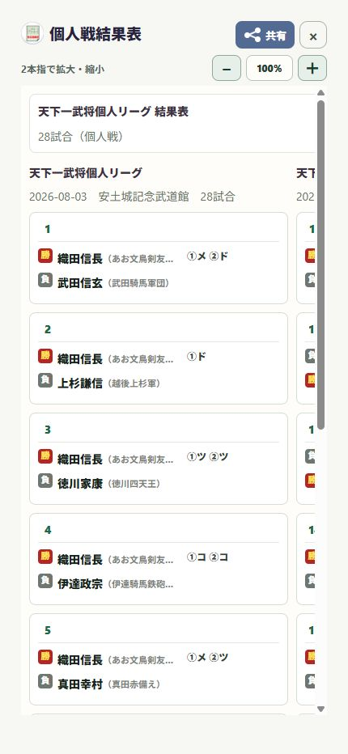

16 / 共有する
個人戦の結果表を共有する
対戦と決め手を見やすい表で伝えます。
操作の入口履歴 → 大会／試合 → 結果表 → 共有
結果表を開く
履歴で大会や試合を選び、結果表を開きます。
表の内容を確認する
選手名、対戦相手、決め手、勝敗を確認します。小さい場合は拡大し、横に続く表も確認します。
共有先を選ぶ
「共有」を押します。端末の共有画面でLINEやメールなどを選び、送る相手を確認します。
読みやすさを確認する
受け取る人が拡大して読めるよう、画面のスクショではなくアプリの共有機能を使います。

